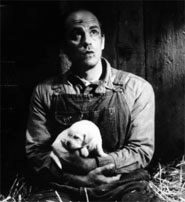
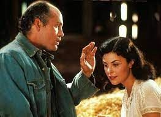

Summary:
It is Sunday afternoon and Lennie is alone in the barn, sitting in the hay and stroking the dead body of his puppy. He talks to himself, asking the animal why it died: “You ain’t so little as mice. I didn’t bounce you hard.” Worrying that George will be angry and will not let him raise the rabbits on their farm, he starts to bury it in the hay. He decides to tell George that he found it dead but then realizes that George will see through this lie. Frustrated, he curses the dog for dying and hurls it across the room. Soon, though, Lennie retrieves the puppy, strokes it again, and reasons that perhaps George won’t care, since the puppy meant nothing to George.
As he talks to himself, Curley’s wife enters and sits beside him. Lennie hastily hides the puppy and tells her that George ordered him not to speak to her. She reassures him that it is safe for him to talk to her, pointing out that the other men are occupied with a horseshoe tournament outside and will not interrupt them. She discovers the puppy and consoles him about its death, declaring that “the whole country is fulla mutts.” She then complains about her loneliness and the cold treatment she gets from the ranch-hands. She tells Lennie about her dreams of living a different life. She reveals that her mother denied her the opportunity to join a traveling show when she was fifteen and then, years later, a talent scout spotted her and promised to take her to Hollywood to become a movie star. When nothing came of it, she decided to marry Curley, whom she dislikes.

Lennie continues to talk about his rabbits, and she asks him why he likes animals so much. Lennie replies that he likes to touch soft things with his fingers. She admits that she likes the same thing, and offers to let him stroke her hair. She warns him not to “muss it,” but he quickly becomes excited and holds on too tight, frightening her. When she cries out, Lennie panics and clamps his strong hands over her mouth to silence her. The more she struggles, the tighter his grip becomes, and he shakes her until her body goes limp. Lennie has broken her neck.

The barn goes still as Lennie realizes what he has done. He tries to bury Curley’s wife in the hay, worrying chiefly that George will be angry with him. Taking the puppy’s body with him, he flees toward the meeting place that George designates at the book’s opening—the clearing in the woods. Candy comes looking for Lennie and finds the body. He calls George, who realizes immediately what has happened. George expresses the hope that maybe Lennie will just be locked up and still be treated well, but Candy tells him that Curley is sure to have Lennie lynched. Candy asks George if the two of them can still buy the farm, but sees from George’s face that the idea is now impossible. George says quietly that he thinks he knew all along that it would never happen, but because Lennie liked the idea so much, he had started to believe it himself.
George worries that the other men will think that he had something to do with the death of Curley’s wife, so he instructs Candy how to inform them. George will pretend that he has not seen the body and act surprised when Candy delivers the news. George exits, and Candy curses Curley’s wife for destroying their dream of a farm. After a few moments, his eyes full of tears, he goes to alert the rest of the ranch. A crowd soon gathers. George comes in last, with his coat buttoned up. Curley demands that they find Lennie and kill him. Carlson reports that his gun is missing, and assumes that Lennie must have taken it. Curley orders them to fetch Crooks’s shotgun, and the mob sets off after Lennie.
(Visit Sparknotes)

 Of Mice and Men
Of Mice and Men